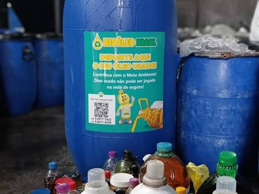

Transformamos óleo de cozinha usado em novos recursos.
Já foram coletados mais de 2.000 litros.
As coletas são realizadas todo final de mês, nos dias 28, 29 e 30.
Coloque o líquido dentro de um reservatório para facilitar a coleta.
Quantidade mínima: 5 litros.
Cadastre-se e agende a sua coleta.
Coleta por caminhão: nossa equipe passa na sua residência ou no seu comércio no final de cada mês, nos dias 28, 29 e 30, e recolhe o óleo que você armazenou.
Reservatório no local: empresas podem solicitar um reservatório da Bio-Óleo para deixar o óleo armazenado até a coleta mensal.

É um tambor azul de plástico, feito para guardar o óleo de cozinha usado com segurança até a coleta. Ele fica fechado, não vaza e mantém o óleo longe da luz, do mau cheiro e de contaminações. É só despejar o óleo usado, fechar bem e esperar a nossa equipe.